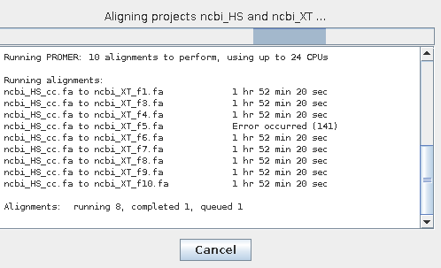

This document discusses how to deal with one or more MUMmer alignments failing. The corresponding MUMmer documentation is v3 and v4.
MUMmer files
When symap executes MUMmer, the resulting alignment files are in:/data/seq_results/<project-name1>-to-<project-name2>/alignFor example,
data/seq_results/demo_seq_to_demo_seq2/align> ls all.done demo_seq_c1.demo_seq2_f2.mum demo_seq_c1.demo_seq2_f1.mum demo_seq_c1.demo_seq2_f2.mum.done demo_seq_c1.demo_seq2_f1.mum.done
All MUMmer files but those with the .mum suffix are removed by symap. If you prefer them not to be removed, use the "-mum" command line parameter, i.e.
./symap -mum
The log files are in the /logs/<project-name1>-to-<project-name2> directory.
Finding the problem
If the MUMmer alignment fails:- Check that the sequences loaded correctly using the View option on the Manager.
- If the files loaded correctly, check the Executables. On Mac, the executables may need to be verified.
- If the executables are okay, inspect the MUMmer log files.
Executables
The alignment programs are provided in the symap/ext directory. There are 64-bit executables for Linux, MacOS x86_64, and MacOS M4. SyMAP will select the correct directory for the machine you are running from, i.e. you do not need to do anything. See System Guide for details.When SyMAP creates a database, it (1) checks the MySQL variables, and (2) checks that the external programs are executable. If you see a message like:
***Error - file is not executable: ext/mummer/mac/promerExecute:
> chmod 755 ext/mummer/mac/promerYou can also try it yourself by typing at the terminal:
>./ext/mummer/mac/promer
USAGE: promer [options] <Reference> <Query>
Try './ext/mummer/mac/promer -h' for more information.
The above shows that the promer code will execute on my MacOS. The 2nd two lines are the promer output.
Verify executable on MacOS: Any executable that has not been okayed by Apple results in the error message:
Apple could not verify "prepro" is free of malware that may harm your mac...See MacOS External for the fix.
Log files
Using p1 = project-name1 and p2 = project-name2
symap_5/
error.log # a SyMAP error will write its trace data into this file and list failed MUMmer
logs/
<p1>-to-<p2>/ # one directory per project-to-project alignment
<p1_c1.p2_f1>.log # MUMmer terminal output - one file per MUMmer alignment
<p1_c1.p2_f2>.log # 2nd alignment....
symap.log # keeps most of the SyMAP output shown on the terminal for this A&S
e.g. p1 = demo_seq and p2 = demo_seq2
demo_seq_to_demo_seq2/
demo_seq_c1.demo_seq2_f1.log # MUMmer output directed to this file for process 1
demo_seq_c1.demo_seq2_f2.log # MUMmer output directed to this file for process 2
symap.log # SyMAP terminal output
Known problems: If an alignment is listed as failed in the error.log file,
the corresponding <p1_c1.p2_fn>.log file will contain the MUMmer error
(e.g. mummer log).

- There may not be enough memory, see Memory.
- A chromosome sequence may be too big, see Could not create suffix tree.
- The input files may be too large, see Too big.
- On my 2018 MacOS x86_64 it sometimes fails, I have to reboot and then it works.
- If you encounter a different problem, I would appreciate if you let me know so I can add it to this webpage.
Run from the terminal: If the error is not found in the log files or the error is not clear, try the following: Copy the command from the terminal (or log file), and paste to a terminal to execute. The command will look similar to the following, though it will all be on one line:
> ext/mummer/mac/promer
-p data/seq_results/demo_seq_to_demo_seq2/align/demo_seq_c1.demo_seq2_f2.promer
data/seq_results/demo_seq_to_demo_seq2/tmp/demo_seq2/demo_seq2_f2.fa
data/seq_results/demo_seq_to_demo_seq2/tmp/demo_seq/demo_seq_c1.fa
This shows promer output directly on the terminal and provides a better description of the problem.
Out of memory
| Limit CPUs and uncheck Concat | Not-masked or Soft-masked | Go to top |
A MUMmer failure is typically from insufficient memory.
If an alignment fails immediately, and if the last line of the first <alignment>.log file is:
1: PREPARING DATAthe reason is probably that your machine does not have near enough memory as MUMmer could not even prepare the data.
Additionally, the following errors typically indicates a memory problem:
Alignment program error code: 141 20220512|075853|6007| ERROR: mummer and/or mgaps returned non-zero, please file a bug reportor
#..........................ERROR: mummer and/or mgaps returned non-zero, please file a bug report Alignment program error code: 1The error code will appear on the terminal and the MUMmer log file, but not in symap/logs/<..>/symap.log.
Limit CPUs and uncheck Concat
There is no straight-forward way to know if you have enough memory as it depends on the size and complexity of the two genomes being compared. If you think memory may be tight or MUMmer produced an error as shown in the above section, first try running again with reduced CPUs and unchecked Concat:- On the Project Manager panel, limit the number of CPUs, as each CPU uses a considerable amount of memory (e.g. 4 CPUs could collectively use 24G of memory at once). See CPU for further information.
- In the Project Parameters panel, uncheck Concat to reduce the size of the input files to MUMmer. See Concat for a description of this option.
Not-masked or Soft-masked
A memory problem can occur if the genome sequence is not masked or only soft-masked. Try either of the following:- Change the sequence to hard-masked (see Sequence files).
- Set the Pair Parameters parameter to Mask all sequence but the genes.
Could not create suffix tree
SyMAP will only show that MUMmer failed. The MUMmer log file shows:# process 5486610 characters per dot ./ext/mummer/mac/mummer: suffix tree construction failed: textlen=548661066 larger than maximal textlen=536870908 ERROR: mummer and/or mgaps returned non-zero Alignment program error code: 1This appeared to happen because of a large chromosomes of 274,330,532 (larger than any human chromosome). If Concat unchecked, it still happened. This even happened when both sequences were masked, e.g. the Pair Parameter of Mask. It also happened when I downloaded the Ensembl "Hard Mask" sequence.
It fixed the problem when I used mummer4, see Using MUMmer4.
Input file too big
Another error that can occur is the following:./ext/mummer/macM4/mummer: cannot open file "data/seq_results/Mus_to_Rab/align/Mus_cc.Rab_f1.promer.aaqry" or file "data/seq_results/Mus_to_Rab/align/Mus_cc.Rab_f1.promer.aaqry" is emptyThe MUMmer temporary files will have been created, but the .aaqry file is all zeros, hence, MUMmer could not produce the final results. This appears to happen when the input it very big. If this happens, deselect Concat.
One or more MUMmers fails
Sometimes just one or a few of the alignment processes will fail. You will see a line such as:Error: Running command: /Users/cari/Workspace/symap_5/ext/mummer/mac/promer -p data/seq_results/ncbi_HS_to_ncbi_XT/align/ncbi_HS_cc.ncbi_XT_f1.promer data/seq_results/ncbi_HS_to_ncbi_XT/tmp/ncbi_HS/ncbi_XT_f1.fa data/seq_results/ncbi_HS_to_ncbi_XT/tmp/ncbi_XT/ncbi_HS_cc.fa
 |
You will see the failure on the dialog box as is
shown on the left. The remaining processes will continue. When all processes are complete,
you will see a "?" for the pair as shown on the below.
Select the "?" followed by Selected Pair and it will complete the failed processes. |


Incomplete alignment: If SyMAP completed the alignment, e.g. the demo /align directory will have the following files:
-rw-r--r--@ 1 cari staff 0B Apr 10 10:28 all.done -rw-r--r--@ 1 cari staff 1.2M Apr 10 10:28 ncbi_HS_cc.ncbi_XT_f1.mum -rw-r--r--@ 1 cari staff 0B Apr 10 10:28 ncbi_HS_cc.ncbi_XT_f1.mum.done -rw-r--r--@ 1 cari staff 541K Apr 10 10:27 ncbi_HS_cc.ncbi_XT_f2.mum -rw-r--r--@ 1 cari staff 0B Apr 10 10:27 ncbi_HS_cc.ncbi_XT_f2.mum.done
- The all.done indicates that all alignments have completed.
- If all.done does not exist, SyMAP will perform any alignments that do NOT have a corresponding mum.done. If the Concat setting has been switched between the previous and current run, this will not work correctly.
- If the user supplied the alignments (Supply MUMmer files), there may not be mum.done files but there should be an all.done, so it is assumed they are all done.
Using MUMmer4
Sometimes when MUMmer v3 fails, MUMmer v4 will work, e.g. see Could not create suffix tree.MUMmer4 is included in SyMAP package with a fix to promer.pl to work with symap.
Enter the ext/mummer4 directory and follow the instructions in the README. You will need gcc installed. For more information, see mummer4 install.
The following is an example of the steps:
1. Compile MUMmer
cd symap_5/ext/mummer4 pwd # my pwd is /Users/cari/Workspace/symap_5/ext/mummer4 cd mummer-4.0.0rc1 ./configure --prefix=/Users/cari/Workspace/symap_5/ext/mummer4/m4 # your pwd followed by /m4 make make install
2. Edit symap.config to set the mummer path, e.g.
mummer_path = /Users/cari/Workspace/symap/ext/mummer4/m4
Running MUMmer from the command line
If you need to run MUMmer using the terminal command line from some other machine, do the following:- The naming of your files and their order into MUMmer is VERY important. Everything will mess up
if this is done wrong!
- It uses the Directory name of the two projects in the data/seq directory.
- Say the projects are in data/seq/arab and data/seq/brap.
- The directory name arab is alphanumerically less than brap, so it is proj1 and brap is proj2.
- Create a directory data/seq_results/<proj1-to-proj2>/align.
- If your chromosomes are large, split the sequence file into chromosome files using xToSymap.
Run MUMmer on each chromosome file for proj2 against each chromosome file of proj1. - Running MUMmer: The query must be alphanumerically less than reference. For the promer command:
USAGE: promer [options] <Reference> <Query> e.g. promer proj2 proj1
See the commands for the Example below. Replace the demo names with your project/chromosome names. If you have many chromosome pairs to process, put them in a script, e.g. demo script. Then execute the script from the main symap directory.
To view the MUMmer parameters, see MUMmer parameters.
- Promer: The output of promer is input to "show-coords -dlkT".
- Nucmer: The output of nucmer is input to "show-coords -dlT".
- Result files:
- The result files must have suffix ".mum"
- The ".mum" files must be in the directory data/seq_results/<proj1-to-proj2>/align.
- In the <proj1-to-proj2>/align directory, execute:
touch all.done
This creates a file, which indicates to SyMAP that the alignments are done and to process the files in the directory ending with ".mum".
- The result files must have suffix ".mum"
- When you run Selected Pair, SyMAP will recognize the files and use them to build the synteny blocks.
Example
This example will use MUMmer for the loaded projects demo_seq and demo_seq2.If you want to try this and you have already run the demo, remove the synteny results from the database using the symap Clear Pair along with the directory data/seq_results/demo_seq_to_demo_seq2.
Input:
- Project demo_seq has file genomic.fa (containing 2 chromosomes).
- Project demo_seq2 has files chr1.seq.gz and chr3.seq.
- Note that demo_seq is alphanumerically less than demo_seq2.
The commands are as follows:
gunzip data/seq/demo_seq2/sequence/chr1.seq.gz # MUMmer does not process zipped files
cd data/seq_results
mkdir demo_seq_to_demo_seq2
mkdir demo_seq_to_demo_seq2/align
touch demo_seq_to_demo_seq2/align/all.done
# from symap directory, execute the following (the indented line are part of the previous line)
ext/mummer/mac/promer -p data/seq_results/demo_seq_to_demo_seq2/align/results.promer
data/seq/demo_seq2/sequence/chr1.seq data/seq/demo_seq/sequence/genomic.fa
ext/mummer/mac/show-coords
-dlkTH data/seq_results/demo_seq_to_demo_seq2/align/results.promer.delta
>data/seq_results/demo_seq_to_demo_seq2/align/seq1chr1.mum
See script for the full set of MUMmer commands to process the demo sequence data.
It is easiest to run the demo by copying the contents of the script into a file (e.g. ./symap/demo.txt),
then from the symap directory, execute it (e.g. sh demo.txt).
When ./symap is started, select demo_seq and demo_seq2. There will be a "A" in their cell; select it followed by Selected Pair and it will load the alignments and compute the synteny.
This demo has been fully tested with symap v5.7.9.
MUMmer parameters
When setting parameters for MUMmer in pairs parameters, they are NOT checked for correctness.To see the parameters for the default MUMmer V3 on MacOS, from the symap directory:
./ext/mummer/mac/mummer -h ./ext/mummer/mac/promer -h ./ext/mummer/mac/nucmer -hTo see the parameters for the default MUMmer V3 on Linux:
./ext/mummer/linux/mummer -h ./ext/mummer/linux/promer -h ./ext/mummer/linux/nucmer -hIf you compiled V4 in the /ext directory:
./ext/mummer4/m4/bin/mummer -h ./ext/mummer4/m4/bin/promer -h ./ext/mummer4/m4/bin/nucmer -h
After running MUMmer, all alignment files are removed except the ".mum" file; to prevent removal,
execute
./symap -mum.
Getting Help
If none of these suggestions fix your problem, email cas1@arizona.edu with the following files (described in MUMmer files):- error.log
- logs/<p1>-to-<p2>/symap.log
- logs/<p1>-to-<p2>/<p1_cn.p2.fm>.log where n and m are the input file number.
- Any output to the terminal (either copy and paste into the email, or send a screen capture)
symap/error.log symap/logs/demo_seq_to_demo_seq2/symap.log symap/logs/demo_seq_to_demo_seq2/demo_seq_c1.demo_seq2_f2.log
| Go to top |
Email: cas1@arizona.edu